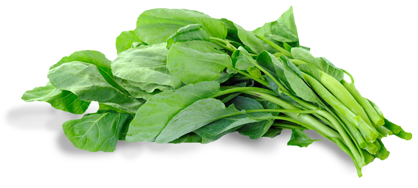

Spinach
Spinach is a healthy and nutrient-rich food you should certainly include in your everyday diet.
It is a wonderful source of iron, folate, chlorophyll, Vitamin E, magnesium, Vitamin A, fiber, plant protein, and Vitamin C.
Due to their antioxidant abilities, Vitamins C, E, and A are especially great for your skin.
Spinach contains antioxidants that fight against all types of skin problems.
Add it to your everyday diet and see what happens. By eating spinach, you’re just cleaning your skin from the inside out!
EVENT LOG